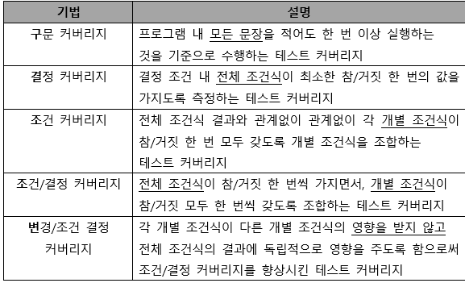
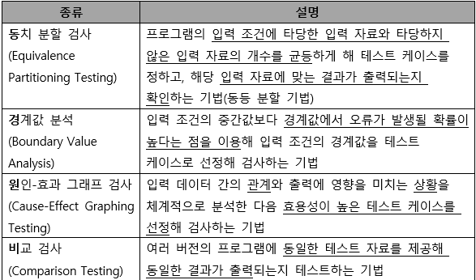
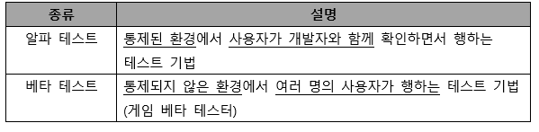
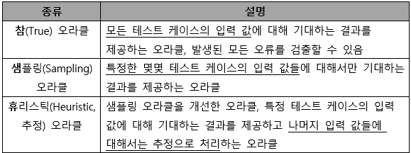
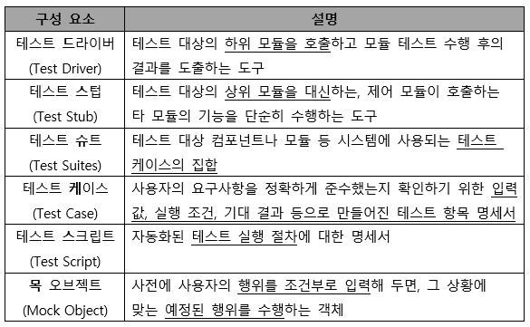
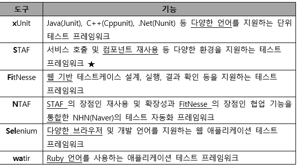
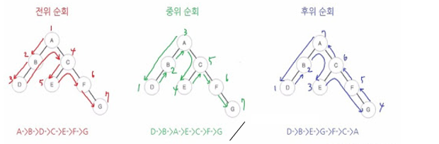

[필기] 소프트웨어 개발
NOTE
정보처리기사 필기 — 자료구조, 알고리즘, 애플리케이션 테스트 등 소프트웨어 개발 과목 핵심 정리.
📌 개념
Chapter 2. 소프트웨어 개발
-
자료 구조
- 자료구조의 분류
- 선형 구조
- 배열, 스택, 큐, 데크, 선형 리스트 (연속/연결리스트
- 비선형 구조
- 트리, 그래프
- 배열
- 정적인 자료 구조로 기억장소의 추가가 어렵고, 메모리의 낭비 발생
- 반복적인 데이터 처리 작업에 적합
- 데이터마다 동일한 이름의 변수를 사용해 처리가 간편함
- 스택
- 리스트의 한쪽 끝으로만 데이터 입출입 발생
- 후입선출(LIFO)
- 큐
- 리스트의 한쪽에서는 삽입 반대쪽은 삭제
- 선입선출(FIFO)
- 시작과 끝을 표시하는 두개의 포인터 존재
- 운영체제의 작업 스케줄링에 사용함
- 데크
- 리스트의 양쪽 끝에서 삽입과 삭제작업을 할 수 있는 자료구조
- 선형리스트
- 연속리스트
- 배열과 같이 연속되는 기억장소에 저장
- 기억장소 이용효율은 밀도가 1로서 가장 좋음
- 중간에 데이터를 삽입하기위해 연속된 빈 공간이 있어야함
- 삽입, 삭제 시 자료의 이동이 필요함
- 연결리스트
- 노드의 포인터부분을 이용해 서로 연결
- 노드의 삽입, 삭제 작업 용이
- 연결을 위한 포인터가 필요하기 떄문에, 기억 공간의 효율은 떨어짐
- 접근 속도가 느림
- 중간노드연결이 끊어지면 그 다음 노드를 찾기 힘듦
- 트리
- 정점(노드)과 선분(가지)을 이용해 사이클을 이루지 않도록 구성한 그래프의 특수한 형태
- 노드 : 트리의 기본 요소, 자료 항목과 다른 항목에 대한 가지를 합친 것
- root 노드 : 트리의 맨위 노드
- degree (차수) : 각 노드에서 뻗어 나온 가지의 수
- 단말노드 : 자식이 없는 노드
- 자식 노드
- 부모 노드
- 형제 노드 : 동일한 부모를 갖는 노드
- 트리의 디그리 : 노드들의 디그리 중에서 가장 많은 수
- 정점(노드)과 선분(가지)을 이용해 사이클을 이루지 않도록 구성한 그래프의 특수한 형태
- 연속리스트
- 그래프
- 방향 그래프
- 정점을 연결하는 선에 방향이 있는 그래프
- n개의 정점으로 구성된 방향 그래프의 최대 간선 수
- 무방향 그래프
- 방향이 없는 그래프
- n개의 정점으로 구성된 무방향 그래프의 최대 간선 수 = n(n-1)/2
- 방향 그래프
- 선형 구조
- 자료구조의 분류
-
데이터베이스
- 공용 데이터 : 여러 응용 시스템들이 공동으로 소유하고 유지하는 자료
- 통합된 데이터 : 자료의 중복을 최대로 배제한 데이터의 모임
- 운영 데이터 : 고유한 업무를 수행하는 데 없어서는 안 될 자료
- 저장된 데이터 : 컴퓨터가 접근할 수 있는 저장 매체에 저장된 자료
-
DBMS
- 사용자와 데이터베이스 사이에서 사용자의 요구에 따라 정보를 생성해주고, 데이터베이스를 관리해주는 소프트웨어
- 정의기능 (DDL) : 데이터베이스 이용방식, 제약 조건 등을 명시하는 기능
- 조작기능(DML) : 사용자와 데이터베이스 사이의 인터페이스 수단 제공
- 제어 기능(DCL) : 무결성, 보안, 권한, 병행제어
- 사용자와 데이터베이스 사이에서 사용자의 요구에 따라 정보를 생성해주고, 데이터베이스를 관리해주는 소프트웨어
- 데이터 입출력
-
SQL : 관계대수와 관계해석을 기초로 한 혼합 데이터 언어
- 데이터 정의어(DDL) : Domain, Schema, Table,View,Index를 정의하거나 변경 또는 삭제할 때 사용하는 언어
- 데이터 조작어(DML) : Select(검색), Insert(삽입), Update(갱신), Delete(삭제)로 저장된 데이터를 실질적으로 처리하는데 사용하는 언어
- 데이터 제어어(DCL) : 데이터의 무결성, 보안, 회복, 병행 제어 등을 정의하는데 사용되는 언어
-
데이터 접속
-
트랜잭션
-
데이터베이스의 상태를 변환시키는 하나의 논리적 기능을 수행하기 위한 작업의 단위
-
한꺼번에 모두 수행되어야 할 일련의 연산들
- COMMIT : 트랜잭션 처리가 정상적으로 종료되어 수행한 변경 내용을 DB에 반영하는 명령어
- ROLLBACK : 트랜잭션 처리가 비정상적으로 종료되어 DB의 일관성이 깨졌을 때 트랜잭션이 행한 모든 변경 작업을 취소하고 이전상태로 되돌리는 연산
- SAVEPOINT(=CHECKPOINT) : 트랜잭션 내에서 ROLLBACK할 위치인 저장점을 지정하는 명령어
원리 특징 원자성 트랜잭션 연산을 데이터베이스 모두에 반영 또는 반영하지 말아야함 일관성 트랜잭션이 실행을 성공적으로 완료할 시 일관성 있는 데이터베이스 상태를 유지 독립성 둘 이상 트랜잭션 동시 실행 시 한 개의 트랜잭션만 접근이 가능하여 간섭 불가 영속성 성공적으로 완료된 트랜잭션 결과는 영구적으로 반영함
-
-
-
절차형 SQL
-
개요
- C, JAVA등 연속적인 실행이나 분기, 반복 등의 제어가 가능한 SQL
- 일반적인 프로그래밍 언어에 비해 효율이 떨어짐
- 연속적인 작업들으 처리하는데 적합
- Begin ~ End 형식으로 작성되는 블록구조로 기능별 모듈화 가능
- 프로시저 : 호출을 통해 미리 저장해 놓은 SQL 작업 수행, 처리 결과는 한 개 이상의 값 혹은 반환을 아예 하지 않음
- 트리거 : 입력, 갱신, 삭제 등의 이벤트가 발생할 때마다 관련 작업을 자동 수행
- 사용자 정의 함수 : 프로시저와 유사하게 SQL을 사용해 일련의 작업을 연속적으로 처리함 (종료시 예약어 RETURN을 사용해 처리결과를 단일값으로 변환)
-
테스트와 디버깅
- 테스트 전 구문오류나 참조 오류의 존재 여부 확인
- 오류 및 경고 메시지가 상세히 출력되지 않으므로 SHOW 명령어를 통해 내용 확인
- 실제로 데이터베이스에 변화를 줄 수 있는 삽입 및 변경 관련 SQL문을 주석으로 처리하고 디버깅 수행
-
쿼리 성능 최적화
- 데이터 입,출력 애플리케이션의 성능 향상을 위해 SQL코드를 최적화 하는 것
- 성능 측정 도구 APM을 사용해 최적화할 쿼리를 선정
- 최적화할 쿼리에 대해 옵티마이저(Optimizer)가 수립한 실행 계획을 검토하고 SQL코드와 인덱스 재구성
-
-
개발 지원 도구
-
통합 개발환경 (IDE)
- 개발에 필요한 환경, 즉 편집기(Editor), 컴파일러(Compiler), 디버거(Debugger) 등의 다양한 툴을 하나의 인터페이스로 통합해 제공하는 것을 의미함
ex) 이클립스, 비주얼스튜디오, 액스코드, 안드로이드 스튜디오
-
빌드 자동화 도구
- 소스 코드를 소프트웨어로 변환하는 과정에 필요한 전처리, 컴파일 등의 작업들을 수행하는 소프트웨어
- Ant
- 아파치 소프트웨어 재단에서 개발한 소프트웨어
- 자바 프로젝트의 공식적인 빌드 자동화 도구
- XML기반의 빌드 스크립트를 사용
- 정해진 규칙이나 표준이 없어 개발자가 모든 것을 정의
- 스크립트의 재사용이 어려움
- Maven
- 아파치 소프트웨어 재단에서 Ant의 대안으로 개발
- 규칙이나 표준이 존재해 예외 사항만 기록됨
- 컴파일과 빌드를 동시에 수행할 수 있음
- 의존성을 설정하여 라이브러리를 관리
- Gradle
- 기존의 Ant와 Maven을 보완해 개발된 빌드 자동화 도구
- 안드로이드 스튜디오(안드로이드 앱 개발)의 공식 빌드 도구
- Maven과 동일하게 의존성(Dependency) 활용
- 그루비(Groovy) 기반의 빌드 스크립트 사용
- 플러그인을 설정하면, JAVA, C/C++, Python 등의 언어도 빌드 가능
- 실행할 처리 명령들을 모아 TASK로 만든 후Task 단위로 실행
- 이전에 사용했던 Task를 재사용하거나 다른 시스템의 Task를 공유할 수 있는 빌드 캐시 기능 지원 (빌드의 속도향상)
- Jenkins
- JAVA 기반의 오픈 소스 형태로 가장 많이 사용되는 빌드 자동화 도구
- 서블릿 컨테이너에서 실행되는 서버 기반 도구
- SVN, Git 등 대부분의 형상 관리 도구와 연동 가능
- 친숙한 Web GUI 제공
-
기타 협업 도구 (Groupware, 그룹웨어)
- 일정 관리 도구 : 구글 캘린더
- 프로젝트 관리 도구 : 트렐로, 지라
- 정보 공유 및 커뮤니케이션 도구 : 슬랙, 잔디, 태스크월드
- 디자인 도구 : 스케치, 제플린
- 아이디어 공유 도구 : 에버노트
- 형상 관리 도구 : 깃허브
-
- 소프트웨어 패키징
- 개요
- 모듈별로 생성한 실행 파일들을 묶어 배포 설치 파일을 만드는 것
- 개발자가 아닌 사용자를 중심으로 진행
- 고려사항
- 운영체제(OS), CPU, 메모리 등에 필요한 최소 환경을 정의
- 하드웨어와 함께 관리될 수 있도록 Managed Service형태로 제공
- 다양한 사용자의 요구사항 반영
- 패키징 작업 순서
- 기능 식별 → 모듈화 → 빌드 진행 → 사용자 환경 분석 → 패키징 및 적용 시험 → 패키징 변경 개선 → 배포
- 제품 소프트웨어 패키징 도구 활용 시 고려사항
- 패키징 시 사용자에게 배포되는 SW이므로 보안 고려
- 사용자 편의성을 위한 복잡성 및 비효율성 문제 고려
- 제품 SW종류에 적합한 암호화 알고리즘 적용
- 다양한 이기종 연동 고려
- 개요
-
릴리즈 노트
- 릴리즈 노트의 개요
- 개발 과정에서 정리된 릴리즈 정보를 소프트웨어의 고객과 공유하기 위한 문서
- 개선된 작업이 있을 때마다 관련 내용을 릴리즈 노트에 담아 제공
- 개발팀에서 제공하는 소프트웨어 사양에 대한 최종 승인을 얻은 후 문서화 되어 제공
- 초기 버전 작성시 고려사항
항목 내용 Header(머리말) 릴리즈 노트 이름, 소프트웨어 이름, 릴리즈 버전, 릴리즈 날짜 등 개요 소프트웨어 및 변경사항 전체에 대한 간략한 내용 목적 해당 릴리즈 버전에서의 새로운 기능이나 수정된 기능의 목록과 릴리즈 노트의 목적에 대한 간략한 개요 문제 요약 수정된 버그에 대한 간략한 설명 또는 릴리즈 추가 항목에 대한 요약 재현 항목 버그 발견에 대한 과정 설명 수정/개선 내용 버그를 수정/개선한 내용을 간단히 설명 사용자 영향도 사용자가 다른 기능들을 사용하는데 있어 해당 릴리즈버전에서의 기능 변화가 미칠 수 있는 영향에 대한 설명 SW 지원 영향도 해당 릴리즈 버전에서의 기능 변화가 다른 응용 프로그램들을 지원하는 프로세스에 미칠 수 있는 영향에 대한 설명 노트 SW/HW 설치 항목, 업그레이드, 소프트웨어 문서화에 대한 참고 항목 면책 조항 회사 및 소프트웨어와 관련하여 참조할 사항 (프리웨어, 불법복제금지 등) 연락처 사용자 지원 및 문의 응대를 위한 연락처 정보 - 추가 버전 작성 시 고려사항
- 베타 버전이 출시되거나 긴급한 버그 수정, 업그레이드와 같은 자체 기능향상, 사용자 요청등의 특수한 상황일 경우 추가 작성
- 버그 번호를 포함한 모든 수정된 내용을 담아 릴리즈노트작성
- 추가나 수정된 경우 자체기능향상과는 다른 별도의 릴리즈 버전 출시하고 릴리즈노트 작성
- 릴리즈 노트작성 순서
- 모듈 식별 → 릴리즈 정보확인 → 릴리즈 노트 개요 작성 → 영향도 체크 → 정식 릴리즈 노트 작성 → 추가 개선 항목 식별
- 릴리즈 노트의 개요
- 디지털 저작권 관리
- 디지털 콘텐츠 관리 및 보호 기술
- 디지털 저작권 관리(DRM)의 흐름
- 콘텐츠 제공자
- 콘텐츠 분배자 : 암호화된 콘텐츠 유통
- 콘텐츠 소비자 : 콘텐츠를 구매해서 사용
- 패키저 : 콘텐츠를 메타데이터와 함께 배포 가능한 형태로 묶어 암호화하는 프로그램
- 클리어링 하우스 : 저작권에 대한 사용 권한, 라이선스 발급, 결제관리 등을 수행하는 곳
- DRM 컨트롤러 : 배포된 콘텐츠의 이용권한을 통제하는 프로그램
- 보안 컨테이너 : 전자적 보안 장치
- 디지털 저작권 관리의 기술 요소
- 암호화
- 키 관리
- 식별 기술
- 저작권 표현 : 라이선스의 내용 표현
- 암호화 파일 생성
- 정책 관리
- 크랙 방지
- 인증
- 형상관리
- 소프트웨어 패키징의 형상관리
- 형상 관리는 개발과정에서 소프트웨어의 변경 사항을 관리
- 소프트웨어 개발의 전 단계에 적용되는 활동
- 형상관리의 중요성
- 소프트웨어 변경사항을 체계적으로 추적하고 통제가능
- 소프트웨어의 무절제한 변경 방지
- 진행정도 확인 가능
- 형상관리 기능
- 형상 식별 : 계층 구조로 구분하여 수정 및 추적 용이
- 형상 통제 : 식별된 형상 항목에 대한 변경 요구를 검토
- 형상 감사 : 기준선의 무결성을 평가
- 형상 기록 : 작업의 결과를 기록, 관리하고 보고서를 작성하는 작업
- 버전 제어
- 소프트웨어 버전 등록 관련 주요 용어
- 저장소 : 변경 내역에 대한 정보들이 저장
- 가져오기 : 버전관리가 되고 있지 않은 저장소에 처음으로 파일을 복사하는 것
- 체크아웃 : 프로그램을 수정하기 위해 저장소에서 파일을 받아오는 것
- 체크인 : 체크아웃한 프로그램을 수정한 후 새로운 버전으로 갱신하는 것
- 커밋 : 이전에 갱신된 내용이 있는 경우에는 충돌을 알리고 diff도구를 이용해 수정한 후, 갱신을 완료함
- 동기화 : 저장소에 있는 최신 버전으로 자신의 작업 공간을 동기화 하는 것
- 소프트웨어 버전 등록 과정
- 가져오기 → 인출 → 예치(Commit) → 동기화 → 차이 (diff)
- 제품 소프트웨어의 형상 관리 역할
- 배포본 관리에 유용
- 사용자의 소스 수정 제한
- 동일한 프로젝트 여러개발자 동시 개발 가능
- 소프트웨어 패키징의 형상관리
- 버전관리 도구
- 공유 폴더 방식
- 버전관리 자료가 로컬 컴퓨터의 공유 폴더에 저장되어 관리
- 개발자들은 개발이 완료된 파일을 공유폴더에 복사
- 담당자는 공유 폴더의 파일을 자기 PC에 복사해 컴파일
- 파일의 변경 사항을 데이터베이스에 기록하며 관리
- 클라이언트/서버 방식
- 버전 관리 자료가 중앙 시스템에 저장되어 관리되는 방식
- 서버의 자료를 개발자별로 자신의 PC(클라이언트)로 복사해 작업한 후 변경된 내용을 중앙 서버에 반영
- 모든 버전 관리는 서버에서 수행됨
- 하나의 파일을 서로 다른 개발자가 작업할 경우 경고 메세지 출력
- 서버에 문제가 생기면 다른 개발자와의 협업 및 버전 관리 작업은 중단
- 분산 저장소 방식
- 하나의 원격 저장소와 분산된 개발자 PC의 로컬 저장소에 함께 저장되어 관리되는 방식
- 개발자별로 원격 저장소의 자료를 자신의 로컬 저장소로 복사해 작업한 후 변경된 내용을 로컬 저장소에서 우선 반영한 다음 이를 원격 저장소에 반영
- 원격 저장소에 문제가 생겨도 로컬 저장소의 자료를 이용해 작업 가능
- 로컬 저장소에서 작업을 수행할 수 있어 처리속도가 빠름
- SVN
- CVS를 개선한 것
- 모든 개발 작업은 trunk디렉터리에서 작업, 추가작업은 branches 디렉토리에서 작업을 완료한 후 trunk와 결합
- 서버 ⇒ UNIX 사용
- 오픈 소스 무료사용 가능
- CVS의 단점이었던 파일이나 디렉터리의 이름 변경, 이동 등이 가능
- GIT(깃)
-
원격 저장소는 여러 사람들이 협업을 위해 버전을 공동 관리하는 곳
- 자신의 버전 관리 내역 반영 = PUSH
- 다른 개발자의 변경 내용을 가져옴 = fetch
- 로컬 저장소는 개발자들이 본인의 실제 개발을 진행하는 장소
- 브렌치(branch)를 이용하면 다양한 형태의 기능 테스팅 가능
- 스냅샷으로 저장(파일의 변화)
- 스냅샷은 이전 스냅샷의 포인터를 가지므로 버전의 흐름 파악 가능


-
- 공유 폴더 방식
- 애플리케이션 테스트
- 애플리케이션 테스트의 개념
- 결합 찾기
- 고객 needs 확인
- 정상인지 검증
- 애플리케이션 테스트의 기본 원리
- 테스팅은 결함이 존재함을 밝히는 것 = 결함이 없다고 증명할 수 는 없음
- 완벽한 테스팅은 불가능 : 무한 경로, 무한 입력 값으로 인한 어려움
- 개발 초기에 테스팅 시작 : 결함 예방
- 결함 집중 : 파레토방식, 20%모듈에서 80% 결함 발견
- 살충제 패러독스 : 동일한 테스트 케이스에 의한 반복적 테스트는 새로운 버그를 찾지 못함
- 테스팅은 정황에 의존적 : 소프트웨어 성격에 맞게 실시
- 오류-부재의 궤변 : 요구사항을 충족하지 못하면 결함이 없어도 품질이 높다 할 수 없음
- 애플리케이션 테스트의 개념
-
애플리케이션 테스트의 분류
- 정적 테스트 : 프로그램 실행 x , 소스코드를 대상으로 분석하는 테스트
- 워크스루, 인스펙션, 코드검사
- 동적 테스트 : 프로그램 실행 o, 오류찾는 테스트
- 화이트박스 테스트, 블랙박스 테스트
- 테스트 = 검사
- 테스트 기반에 따른 테스트
- 명세 기반 테스트 : 명세를 빠짐없이 테스트 케이스로 만들어 구현하고 있는지 확인하는 테스트
- 구조 기반 테스트 : 소프트웨어 내부의 논리 흐름에 따라 테스트진행하는지
- 경험 기반 테스트 : 테스트의 경험을 기반으로 수행하는 테스트
- 시각에 따른 테스트
- 검증 테스트 : 개발자 시각에서 테스트
- 단위테스트, 통합테스트,시스템테스트
- 확인 테스트 : 사용자 시각에서 테스트
- 인수테스트 (알파테스트, 베타테스트)
- 검증 테스트 : 개발자 시각에서 테스트
- 목적에 따른 테스트

- 테스트 커버리지 유형

다중 조건 커버리지 : 결정 조건 내 모든 개발 조건식의 모든 가능한 조합을 100% 보장하는 테스트 커버리지
- 정적 테스트 : 프로그램 실행 x , 소스코드를 대상으로 분석하는 테스트
-
화이트박스 테스트, 블랙박스 테스트
-
화이트박스 테스트
- 모듈 안의 내용을 직접 볼 수 있음
- 내부의 논리적인 모든 경로를 테스트
- 소스코드 모든 문장을 한번이상 수행
- 논리적 경로 점검
- 기초 경로 검사 : 실행 경로의 기초를 정의하는 지침
- 제어 구조 검사
- 조건 검사 : 논리적 조건을 테스트하는 기법
- 루프검사 : 반복 구조에 맞춰 테스트하는 기법
- 데이터흐름검사 : 프로그램에서 변수의 정의와 변수 사용의 위치에 초점을 맞춤
-
블랙박스
- 모듈 안에서 어떤일이 일어나는지 모름
- 특정 기능을 알기 위해 각 기능이 완전히 작동되는 것을 입증하는 테스트(= 기능테스트)
- 소프트웨어 인터페이스에서 실시되는 테스트

오류예측검사 : 다른 블랙박스 테스트 기법으로 찾아낼 수 없는 오류를 찾아내는 일련의 봉충적 검사기법 (데이터 확인 검사)
- 개발 단계에 따른 애플리케이션 테스트
-
단위 테스트
- 코딩 직후 최소 단위인 모듈이나 컴포넌트에 초점을 맞춤
- 사용자의 요구사항을 기반으로 한 기능성테스트를 최우선으로 수행
- 명세 기반 테스트, 구조 기반 테스트 중 주로 구조 기반 테스트를 시행
-
통합 테스트
- 단위 테스트가 완료된 모듈들을 결합하여 하나의 시스템으로 완성시키는 과정에서 테스트를 의미
- 모듈 간 또는 통합된 컴포넌트 간의 상호작용 오류 검사
-
시스템 테스트
- 개발된 소프트웨어가 컴퓨터 시스템에서 완벽하게 수행되는가를 점검
- 실제 사용 환경과 유사하게 만든 테스트 환경에서 테스트를 수행해야함
- 기능적 요구사항, 비기능적 요구사항 구분
-
인수 테스트
- 개발한 소프트웨어가 사용자의 요구사항을 충족하는지에 중점을 두는 테스트

-
- 통합 테스트
- 상향식 통합 테스트
- 하위 모듈 → 상위 모듈 방향 테스트
- 하나의 주요 제어 모듈과 종속 모듈의 그룹인 클러스터 필요
- 하위 모듈들을 클러스터로 결합 → 더미 모듈인 드라이버 작성 → 클러스터 단위로 테스트 → 테스트 완료 후 클러스터는 프로그램 구조의 상위로 이동해 결합하고 드라이버는 실제 모듈로 대체됨
- 하향식 통합 테스트
- 상위 모듈 → 하위 모듈 방향 테스트
- 깊이 우선 통합법, 넓이 우선 통합법 사용
- 테스트 초기부터 사용자에게 시스템 구조를 보여줄 수 있음
- 상위 모듈에서는 테스트 케이스 사용하기 힘듬
- 주요 제어 모듈의 종속 모듈은 스텁(stub)으로 대체 → 깊이 우선 또는 넓이 우선 등의 통합 방식에 따라 하위 모듈인 스텁(stub)들이 한 번에 하나씩 실제 모듈로 교체됨 → 모듈이 통합될때마다 테스트 실시 → 새로운 오류가 발생하지 않음을 보증하기 위해 회귀 테스트 실시
- 혼합식 통합 테스트
- 샌드위치식 통합 테스트 방법
- 하위 수준에서는 상향식 통합, 상위 수준에는 하향식 통합
- 상향식 통합 테스트
- 테스트케이스 | 테스트 시나리오 | 테스트 오라클 | 테스트 하네스
-
테스트 케이스
- 설계된 입력 값, 실행 조건, 기대 결과 등으로 구성된 테스트 항목에 대한 명세서
- 명세 기반 테스트의 설계 산출물에 해당
- 미리 설계해두면 테스트 오류 방지 및 테스트 수행 자원의 낭비를 줄일 수 있음
-
테스트 시나리오
- 테스트 케이스를 적용하는 순서에 따라 여러 개의 테스트 케이스들을 묶은 집합
- 작성시 유의사항
- 항목별 여러개의 시나리오로 분리해 작성
- 사용자의 요구사항과 설계 문서 등을 토대로 작성
-
테스트 오라클
-
사전에 정의된 참 값을 대입해 테스트 결과가 올바른지 판단
-
특징
- 제한된 검증 : 모든 테스트 케이스에 적용 불가
- 수학적 기법 : 값을 수학적 기법을 이용해 구할 수 있음
- 자동화 기능 : 프로그램 실행, 결과 비교, 커버리지 측정 등을 자동화할 수 있음

일관성 검사 오라클 : 변경이 있을 때 테스트 케이스 수행 전과 후의 값이 동일한지 확인
-
-
테스트 하네스

-
- 결함 관리
- 결함 상태 추적
- 결함 분포 : 결함 수 측정
- 결함 추세 : 테스트 진행 시간에 따른 결함 수
- 결함 에이징 : 특정 결함 상태로 지속되는 시간 측정
- 결함 추적 순서
- 결함 등록
- 결함 검토
- 결함 할당
- 결함 수정
- 결함 조치보류
- 결함 종류
- 결함 해제
- 결함 심각도, 결함 우선순위
- 결함 심각도 : 치명적 > 주요 > 보통 > 경미 > 단순
- 결함 우선순위 : 치명적 > 높음 > 보통 > 낮음
- 결함 상태 추적
- 애플리케이션 성능 분석
- 애플리케이션 성능
- 처리량, 응답시간, 경과 시간, 자원 사용률
- 애플리케이션 성능 저하 원인 분석
- DB에 필요 이상의 많은 데이터를 요청한 경우
- 커넥션 풀의 크기를 너무 작거나 크게 설정한 경우
- 미들웨어를 사용한 후 종료하지 않아 연결 누수가 발생한 경우
- 대용량 파일을 업로드하거나 다운로드할 경우
- 소스코드 최적화
- 클린 코드 작성 원칙 (가독성, 단순성, 의존성 배제, 중복성 최소화, 추상화)
- 소스 코드 품질분석 도구의 종류
- 정적 분석 도구 : pmd, cppcheck, checkstyle, sonarQube, ccm, cobertuna
- 동적 분석 도구 : Avalanche, Valgrind
- 애플리케이션 성능
- 모듈 연계
- EAI
- 기업 내 각종 애플리케이션 및 플랫폼 간의 정보 전달, 연계, 통합 등 상호 연동이 가능하게 해주는 솔루션
- point to point : 변경 및 재사용이 어려움
- hub & spoke : 단일 접점인 허브(hub) 시스템을 통해 데이터를 전송하는 중앙 집중형 방식, 확장 및 유지보수가 용이하지만 허브 장애 발생시 시스템 전체에 영향을 미침
- 메시지 버스(ESB방식) : 어플리케이션 사이에 미들웨어를 둬 처리하는 방식
- 하이브리드 : Hub & Spoke와 Message Bus의 혼합 방식, 데이터 병목 현상을 최소화할 수 있음
- ESB
- 애플리케이션 간 연계, 데이터 변환, 웹 서비스 지원 등 표준 기반의 인터페이스를 제공하는 솔루션
- 애플리케이션 통합 측면에서 EAI 와 유사하지만 애플리케이션 보다는 서비스 중심의 통합을 지향
- 결합도를 약하게 유지함
- 관리 및 보안 유지가 쉽고, 높은 수준의 품질 지원이 가능
- EAI
- 인터페이스 구현 | 인터페이스 보안
-
데이터 통신을 이용한 인터페이스 구현
- 인터페이스 형식을 맞춘 데이터 포맷을 전송하고 수신 측에서 파싱해 해석함
- 주로 JSON 이나 XML 형식의 데이터 포맷 이용하여 인터페이스 구현
- JSON : 속성 - 값 쌍으로 이뤄진 데이터 객체를 전달 (텍스트를 사용하는 개방형 표준 포맷)
- XML : 특수한 목적을 갖는 마크업 언어를 만드는데 사용되는 다목적 마크업언어, 웹 페이지의 기본 형식인 HTML의 문법이 각 웹브라우저에서 상호 호환적이지 못하다는 문제와 SGML의 복잡함을 해결하기 위해 개발됨
-
인터페이스 엔티티를 이용한 인터페이스 구현
- 인터페이스가 필요한 시스템 사이에 별도의 인터페이스 엔티티로 상호 연계하는 방식
- 일반적으로 인터페이스 테이블을 엔티티로 활용
- 송, 수신 인터페이스 테이블의 구조는 상황에 따라 서로 다르게 설계할 수도 있음
-
인터페이스 보안 기능 적용
- 네트워크, 애플리케이션, 데이터베이스 영역
- 스니핑 : 네트워크의 중간에서 남의 패킷 정보를 도청하는 해킹
- 소프트웨어 개발 보안 (시큐어 코딩) : 소프트웨어 개발 과정에서 지켜야하는 일련의 보안 활동
ex) 입력 데이터 검증 표현, 보안 기능, 시간 및 상태, 에러 처리, 코드 오류, 캡슐화,API오용
-
- 인터페이스 구현 검증 | 인터페이스 오류 확인
-
인터페이스 구현 검증 도구

-
인터페이스 오류 발생 즉시 확인
- 오류 메시지 알람 표시, 오류 SMS발송, 오류 내역 이메일 발송
-
인터페이스 오류 발생 주기적인 확인
- 인터페이스 오류 로그확인 : 오류를 별도의 로그파일로 생성해 보관함, 자세한 오류 원인 및 내역을 확인할 수 있음
- 인터페이스 오류 테이블 확인 : 오류사항의 확인이 쉬워 관리가 용이, 오류사항이 구체적이지 않음
- 인터페이스 감시(APM) 도구 사용 : 스카우터나 제니퍼 등의 인터페이스 감시도구를 사용해 주기적 확인
-
-
추가 정리, 수제비 및 기출문제
- 트리 순회 방법
- 전위 순회 : root → left → right
- 중위 순회 : left → root → right
- 후위 순회 : left → right → root

-
이진트리
- degree(차수) 가 2 이하인 노드로 구성 → 자식이 둘 이하로 구성된 트리
NOTE
- 트리 순회 방법
-
노드의 차수 : 자식의 개수

2. 논리 데이터 저장소
- 개체 : 관리할 대상이 되는 실체
- 속성 : 관리할 정보의 구체적 항목
- 관계 : 개체 간의 대응 관계
3. 물리데이터 저장소 (논리데이터 저장 → 물리데이터 저장)
- 단위 개체 → 테이블
- 속성 → 칼럼
- UID(Unique Identifier) → 기본키
- 관계 → 외래키
- 컬럼 유형과 길이 정의
- 반정규화 수행
4. 인덱스
- 분포도 10~15% 이내
- 인덱스 컬럼 선정
- 수정이 빈번하지 않아야함
- ORDER BY, GROUP BY, UNION이 빈번한 컬럼
- 분포도가 좋은 컬럼은 단독 인덱스로 생성
- 인덱스들이 자주 조합되어 사용되는 컬럼은 결합 인덱스로 생성
- 설계 시 고려사항
- 지나치게 많은 인덱스는 오버헤드의 원인
- 인덱스만의 추가적인 저장 공간 필요
5. 뷰
- 기본 테이블로부터 유도된, 이름을 가진 가상 테이블
- 가상 테이블 → 물리적으로 구현되어있지 않음 (사용자에게는 보임)
- 데이터의 논리적 독립성을 제공
- 정의된 뷰로 다른 뷰를 정의 가능
- 뷰가 정의된 기본 테이블이나 뷰를 삭제하면 연관된 다른 뷰도 자동 삭제

- 장점
- 논리적 데이터 독립성 제공
- 접근 제어를 통한 자동 보안 제공
- 단점
- 독립적인 인덱스를 가질 수 없음
- 뷰의 정으리를 ALTER로 변경 불가 → DROP하고 새로 CREATE해야함
- 뷰로 구성된 내용에 대한 삽입, 삭제, 갱신, 연산에 제약이 따름
6. 클러스터
- 인덱스의 단점을 해결한 기법 (분포도가 넓을수록 오히려 유리함)
- 분포도가 넓은 “테이블”의 클러스터링은 저장 공간의 절약이 가능
- 대량의 범위를 자주 액세스(조회)하는 경우 적용
- 인덱스를 사용한 처리 부담이 되는 넓은 분포도에 활용
- 클러스터 테이블 선정
- 수정이 빈번하지않은 테이블
- ORDER BY,GROUP BY, UNION이 빈번한 “테이블”
- 처리 범위가 넓어 문제가 발생하는 경우 단일 테이블 클러스터링
- 조인이 많아 문제가 발생되는 경우는 다중 테이블 클러스터링
- 설계 시 고려사항
- 조회 속도를 향상시켜주지만 입력, 수정, 삭제 시 성능이 저하됨(부하가 증가)
7. 파티션
- 레인지 파티셔닝 : 지정한 열의 값을 기준으로 분할 (ex_일별, 월별, 분기별 등)
- 해시 파티셔닝 : 해시 함수에 따라 데이터 분할
- 리스트 파티셔닝 : 미리 정해진 그룹핑 기준에 따라 분할
- 컴포지트 파티셔닝 : 범위분할 이후 해시 함수를 적용
- 파티션의 장점
- 성능향상, 가용성 향상, 백업 가능, 경합 감소
8. PL/SQL
- 선언부 : 실행부에서 참조할 모든 변수, 상수, CURSOR,EXCEPTION 선언
- 실행부 : BEGIN과 END사이에 기술되는 영역
- 예외부 : 실행부에서 에러가 발생했을 떄 문장 기술
- 장점
- 컴파일 불필요, 모듈화 기능, 절차적 언어 사용, 에러 처리
- PL/SQL 을 활용한 저장형 객체 활용
- 저장된 프로시저, 저장된 함수, 저장된 패키지, 트리거(Trigger)
9. 단위 모듈 구현의 원리
- 정보 은닉 : 어렵거나 변경 가능성이 있는 모듈을 타 모듈로부터 은폐
- 분할과 정복 : 복잡한 문제를 분해, 모듈 단위로 문제 해결
- 데이터 추상화 : 각 모듈 자료 구조를 액세스하고 수정하는 함수내에 자료 구조의 표현 내역을 은폐
- 모듈 독립성 : 낮은 결합도와 높은 응집도
10. 알고리즘 설계 기법
- 분할과 정복 : 문제를 나눌 수 없을 떄까지 나누고, 각각을 풀면서 다시 병합해 문제의 답을 얻는 알고리즘
- 동적계획법 : 어떤 문제를 풀기 위해 그 문제를 더 작은 문제의 연장선으로 생각하고, 과거의 해를 활용하는 방식의 알고리즘
- 탐욕법 : 결정을 해야 할 떄마다 그 순간에 가장 좋다고 생각되는 것을 해답으로 선택하는 알고리즘
- 백트래킹 : 어떤 노드의 유망성 점검 후, 유망하지 않으면 그 노드의 부모 노드로 되돌아간 후 다른 자손 노드를 검색하는 알고리즘
11. 시간 복잡도에 따른 알고리즘

12. SW 품질 측정을 위해 개발자 관점에서 고려해야 할 항목
- 정확성, 무결성, 사용성 / 간결성x
1. 인터페이스 보안을 위해 네트워크 영역에 적용되는 솔루션
- IPSEC, SSL, S-HTTP
1. 외계인 코드
- 아주 오래되거나 참고문서 또는 개발자가 없어 유지보수 작업이 어려운 프로그램
1. IPC
- 모듈 간 통신 방식을 구현하기 위해 사용되는 대표적인 프로그래밍 인터페이스 집합으로, 복수의 프로세스를 수행하며 이뤄지는 프로세스 간 통신까지 구현 가능

1. 정렬 알고리즘
- 선택 정렬 : 1번째 수와 남은 수 중 가장 작은수와 교체 → 2번째 수와 남은 수 중 가장 작은수와 교체 ….
- 버블 정렬 : 1번째 와 2번째 비교 후 작은게 앞으로 → 2번째와 3번쨰 비교 후 작은게 앞으로 → …
- 삽입 정렬 : 1번째와 2번째 비교 작은게 앞으로 → 3번쨰는 1번째,2번째 비교 후 작은것과 교체 → 4번째는 1번째,2번째,3번쨰 비교후 작은것과 교체
1. McCabe의 cyclomatic 수

2. 소프트웨어 재공학이 소프트웨어 재개발에 비해 갖는 장점
- 위험부담 감소, 비용 절감, 시스템 명세의 오류 억제, 개발시간의 감소
3. 소프트웨어 품질 목표
- 소프트웨어 운영특성
- 정확성, 신뢰성, 효율성, 무결성, 사용 용이성
- 소프트웨어 변경 수용 능력
- 유지보수성, 유연성, 시험 역량
- 소프트웨어 적용 능력
- 이식성 ,재사용성, 상호 운용성
4. 소프트웨어 공학의 기본 원칙
- 품질 높은 소프트웨어 상품 개발
- 지속적인 검증 시행
- 결과에 대한 명확한 기록 유지
1. AJAX
- JavaScript를 사용한 비동기 통신 기술로 클라이언트와 서버 간에 XML데이터를 주고 받는 기술
2. 외부 스키마, 내부 스키마, 개념 스키마
- 외부 스키마 : 사용자 관점에서 보여주는 데이터베이스 구조
- 내부 스키마 : 저장장치의 입장에서 데이터베이스 전체가 저장되는 방법을 명세
- 개념 스키마 : 전체 사용자 또는 모든 응용 시스템이 필요한 데이터베이스 구조로 조직 전체의 데이터베이스로 단 하나만 존재함
1. 해싱함수